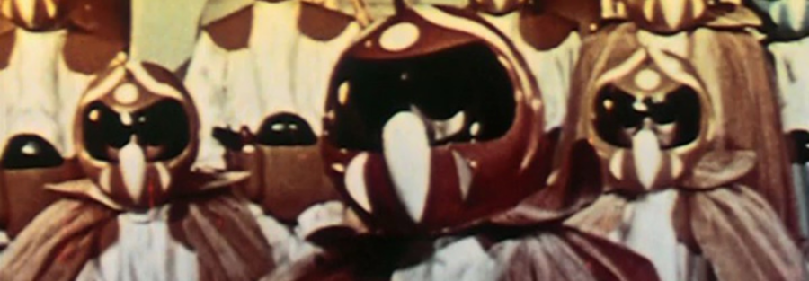

Avant to Live! The Films of Craig Baldwin with guest Brett Kashmere
RSVP
San Francisco-based filmmaker Craig Baldwin embodies the subversive spirit of American underground film. Since the 1970s, Baldwin has been crafting dense, corrosive found-footage films that bend the detritus of American mass culture against the stagnant myths of Western progress. Though utterly singular, his work is uniquely challenging to characterize: as Brett Kashmere and Steve Polta, editors of the new, career-spanning volume Craig Baldwin: Avant to Live!) write, Baldwin’s films are “informed by left politics, cult cinemas, agit-prop activism, structural film, the Situationists, the Yippies, Arte Povera, media archeology, compilation documentary, and other found footage forms.”
For this screening celebrating the recent publication Avant to Live!, Kashmere will appear to present two of Baldwin’s most enduring films, TRIBULATION 99: ALIEN ANOMALIES UNDER AMERICA (1991) and ¡O NO CORONADO! (1992), in 16mm. Taken together, these two works offer a scathingly funny (and, in 2026, frighteningly relevant) counterfactual history of 500 years of colonial misadventure in this hemisphere.
Followed by a post-screening conversation between Brett Kashmere and Luisela Alvaray, Associate Professor at DePaul University.
Works screened:Empty heading
TRIBULATION 99: ALIEN ANOMALIES UNDER AMERICA (Craig Baldwin, 1991, 48 min, 16mm)
Arguably Baldwin’s most visionary assemblage, TRIBULATION 99 presents a dizzying 48-minute alternative history of CIA meddling in Latin American politics, congealed from the cinematic dregs of 20th-century educational and industrial ephemera, TV news, and B-picture sci-fi. Two years before the premiere of The X-Files, Baldwin describes American foreign policy as an occult struggle against a reptilian race of hollow-earth dwelling “Quetzals,” with crackpot narration that splits the difference between William Burroughs, Alex Jones, and Castle Films News Parade. ¡O NO CORONADO! (Craig Baldwin, 1992, 40 min, 16mm)
In ¡O NO CORONADO!, Craig Baldwin combines his trademark techniques of “recycled cinema” with gloriously janky reenactments to tell the story of 16th-century conquistador Francisco Vázquez de Coronado’s ill-fated expedition in what is now the American Southwest. Baldwin’s appropriations from forgotten swashbucklers and old Lone Ranger episodes paradoxically may seem sardonic, but they cohere to form a damning account of colonial violence.